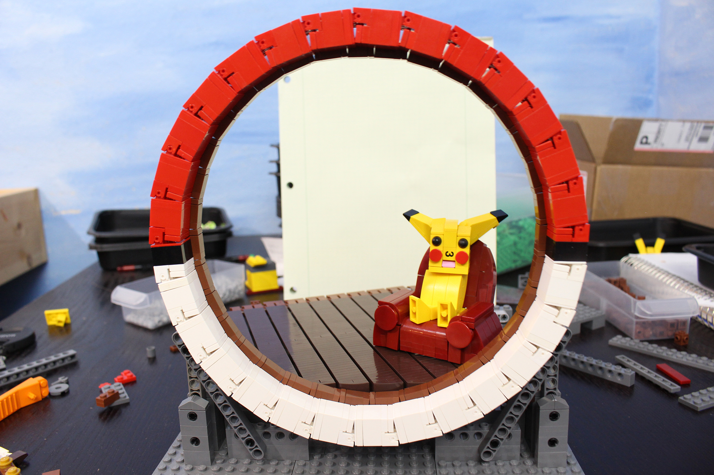

This page highlights some of my creations and my thought processes during each creation’s construction and development as a model. For each build, I highlight different aspects of the challenges I faced in building them and how I achieved the end results.
Having grown up playing Pokémon games, I really enjoyed the playfulness that the series provided and thought it would be fun to recreate something from it out of LEGO. A couple of years prior to building this, I stumbled upon this drawing by deviant-art user Nerd-Scribbles, and felt inspired to embrace the concept and try my hand at recreating it in LEGO.
Seeing as the Pokéball was almost completely circular, it was an uphill battle trying to achieve a truthful recreation. The first solution that I thought of involved the use of flex-pipe around the perimeter of the Pokéball and a large amount of clips with tiles attached to mimic a circular shape, but I quickly found that the gaps left in between the pieces were anything but aesthetically pleasing.
Eventually I stumbled upon the idea of using the 1x2 hinges, stabilized by flex-pipe on the backside. At the time however, I didn’t have nearly enough of the hinges in white or red to complete a circle, so, after drafting it in other colors to confirm the shape worked, I ordered more hinges in red and white and used them to replace the multi-colored ones.

Producing the walls on the inside of the build proved to be the most difficult challenge of all. Turns out creating smooth, concave surfaces out of square bricks is tricky! The best answer came to me in the form of an illegal technique. By using the inner surface of a stack of partly separated jumper plates, I was able to create rings of all different sizes. To stabilize each part of a ring, I made sure to provide an attachment on each end of the section. Once this solution was chosen, it was a simple matter of taking a trip to my local LEGO store and picking up a few thousand dark tan jumper plates from the Pick-a-Brick wall and assembling the inside of the Pokéball.
The final details came together easily; I especially enjoyed making Pikachu’s chair and TV. The room felt very empty until I added the cluttered pieces around on the floor and shelf. The items I included added just the right amount of color to make the build pop and feel like it was really lived in.
One additional fact to mention is that even though the concave walls of the Pokéball might seem unstable, the completed diorama was able to travel with me on a 7 hour plane flight to be displayed at a LEGO convention without any damage whatsoever.
This is a completely original creation that integrates several new stonework and foliage ideas to create a really clean and smooth look. The model started with the idea of using the ends of 4L bars in light blueish grey to mimic little pebbles in a stone wall. The bars and 1x1 and 2x2 tiles, I was able to create a really detailed, yet flat stone wall and pathway. To mount the stones securely, I built a lattice of bars along the back of the creation to attach all different kinds of clips and arms. Additionally, using the same attachment method, I was able to integrate a vine made from green droid arms into the stonework. I also went through the effort of using Minifigure Ice Picks (30193) in the wall, so I could mount flowers (93080h) in Medium Azure (156).
Once I completed the stonework, I had the difficult task of carefully integrating the rounded stones in the grass around the shrine. Lots of forethought went into planning the locations of the stones so that they would line up on the stud grid when I needed to make the transition to foliage.
The creation was finished off by placing a tree atop the shrine, as a symbol of growth and sturdiness. In order to make the leaves seem even smoother than they are, I followed the theme of the build and used the bar end of bright green carrot stems to fill in the holes in each leaf's studs, eliminating some of the dark spots on the tree and thereby adding to the happy atmosphere.
The Painted City is a collaborative project between myself and fellow builders Micah Beideman and Eli Willsea. It was built in the summer of 2019 and completed in the beginning of 2020. Because we wanted to be on the same page about what we were building, we elected to attempt to recreate a piece of concept art originally painted by Zhiyong Li .
The general division of labor was that Eli built the right side, Micah built the left side, and I built the backdrop; however, as the creation was constructed and stored at my house, I had a big hand in ensuring that all parts of the creation flowed together effectively.
The backdrop of this creation depicts what a post-apocalyptic city would look like if it was given a fresh coat of paint. Careful attention had to be paid to the use of different colors in this creation, to make it pop while still feeling run down. Using earthy and muted colors, I was able to highlight the interesting red roofs used throughout the city. I thoroughly enjoyed making each and every structure seen in the backdrop as unique as possible, often employing a cheese slope mosaic or stickered piece to add an extra bit of texture.
The buildings in the foreground were a completely different creation experience than the largely light blueish grey background, but remain extremely interesting in their own right. Because of the large amount of colors used, extra care had to be taken to ensure that the building flowed and seemed realistic. Although we were working from an image as inspiration, a large amount of creative decisions had to be made when transferring the build into the medium of LEGO bricks.
The final result is the culmination of several weeks' work, amounting to my most ambitious creation to date. Each section stands alone, but combining them makes a scene that does the original art justice.
Built for the Colossal Castle Contest in 2014, this creation was the highlight of my early building career, displaying the most advanced rockwork for its time. This scene was briefly shown in the Lord of the Rings: The Fellowship of the Ring in a sweeping pan shot, giving me little more than a few frames to reference when creating the model. Being a huge Lord of the Rings fan, I was more than willing to meticulously save and print out screenshots of the film to use as reference.
The colors used in this creation were kept to a minimum to highlight the action of the battle happening between the Orcs and Uruk Hai. This creation also serves as a great example of my use of minifigs to create stories within a model that would otherwise be absent.
This creation is another original build, and also a collaborative project between Eli Willsea and myself. This is the largest pirate themed creation I have ever made, spanning over 10 feet wide and including several distinct sections. This creation was built in over 20 different sections and was shown off at BrickCon Seattle in 2017.
The greebled pillars are one of a kind and look like they might have been etched in stone. I had a lot of fun integrating different pieces into the tessellation while keeping a uniform texture.
As I knew this build was going to be seen by many people, I wanted to integrate a function into my build. Inspired by various forms of pirate media, I chose to attempt some spinning Mayan circles. The function itself is powered by a single large Power Functions motor and is very robust. The most difficult aspect of this function was achieving the circles of different radii without making the individual circles too close together or ruining the aesthetic with large gaps.
On the left side of the build, I was able to create the tree fort of my dreams, enjoying how the brown contrasts with the bright green leaves. Although the tree design itself is pretty standard, I was able to include an elegant staircase design and a bridge constructed out of over 70 brown LEGO watch clips. The jungle feel of these trees was also aided by the inclusion of a few Parrots and a monkey. (Could I even call this a pirate themed build without them?)
The last main features of this build that I would like to highlight are the landscape, especially the water and foliage.
Without the grand scale of the water, this island would feel much smaller than it is. Towards the deeper parts of the ocean, the layers of translucent parts increase to being several plates thick, allowing for dozens of different shades of blue, rather than just the light blue seen on the shoreline.
The foliage uses bunches of bright flowers to help it feel happy and tropical. Layers and layers of foliage made of different grass and flower pieces were applied all over the island to make it feel like the edge of a thick jungle where no one but native islanders have been in hundreds of years.
With the addition of a stone arch, waterfall, and volcano on the right side of the model, this build was able to encapsulate all of the whimsical features of a pirate island that anybody would love to travel to and explore.